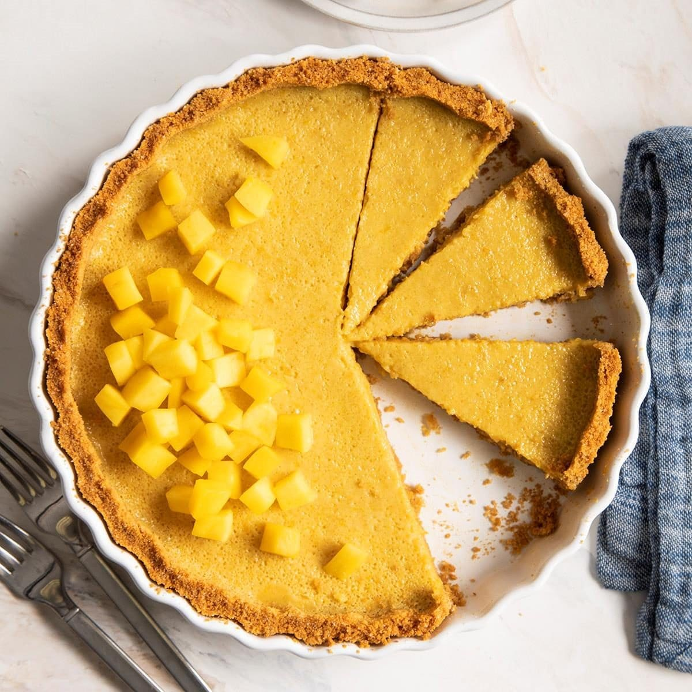

Mango Pie
Treat yourself to a tropical delight with this easy and delicious mango pie recipe!
Ingredients
| Ingredient | Quantity |
|---|---|
| Fresh Mangoes | 2 large, peeled and chopped |
| Sweetened Condensed Milk | 1/2 cup |
| Heavy Cream | 1 cup |
| Graham Cracker Crust | 1 pre-made, 9-inch |
| Sugar | 2 tablespoons (optional, depending on sweetness of mangoes) |
| Lemon Juice | 1 tablespoon |
Watch How to Make Mango Pie
Instructions
1. In a blender or food processor, blend the mangoes until smooth.
2. In a separate bowl, whip the heavy cream until stiff peaks form.
3. In a large mixing bowl, combine the mango puree, sweetened condensed milk, sugar (if desired), and lemon juice.
4. Gently fold in the whipped cream until everything is well combined.
5. Pour the mango mixture into the graham cracker crust and smooth the top with a spatula.
6. Refrigerate the pie for at least 4 hours or overnight to set.
7. Once set, garnish with additional mango slices or whipped cream if desired.
8. Serve chilled and enjoy the tropical flavors of mango pie!